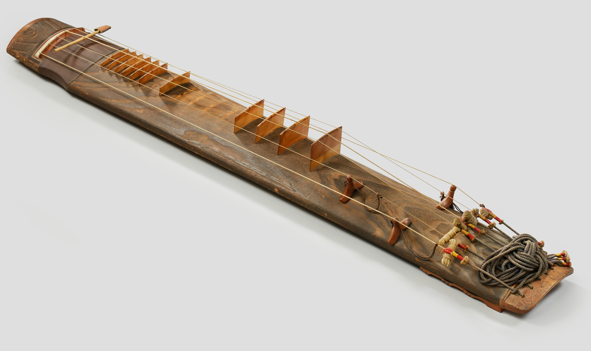

The geomungo is a traditional Korean stringed instrument with a history stretching back more than a thousand years. Its long wooden body holds six strings, supported by a combination of fixed frets and movable bridges.

Unlike many other stringed instruments, the geomungo is played using a small bamboo stick called a suldae. Striking and plucking the strings gives the instrument its distinctive deep, resonant, and often percussive sound.
Explore the instrument to discover how its design, playing techniques, and sound have carried the geomungo from ancient Korea into music being created today.